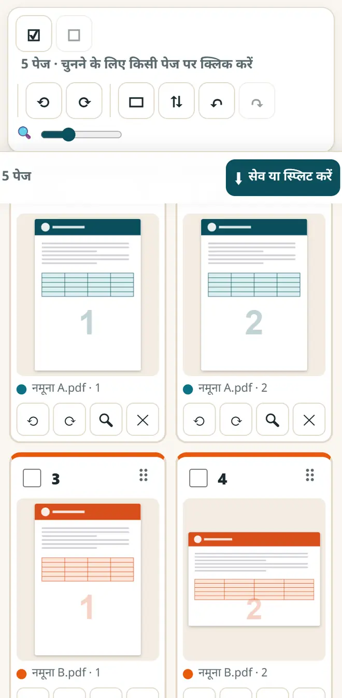
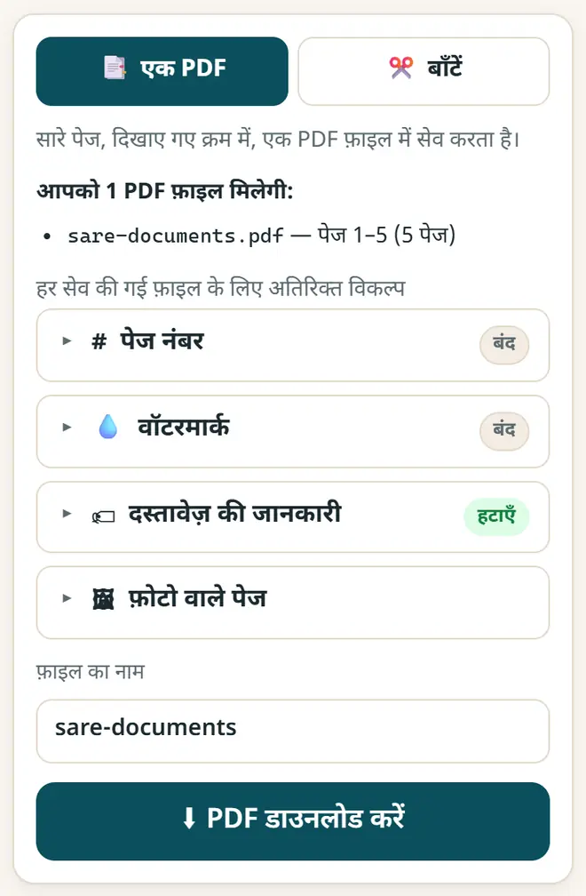

PDF फ़ाइलें बिना अपलोड किए कैसे जोड़ें (मर्ज करें)
ज़्यादातर PDF वेबसाइटें आपके आधार, मार्कशीट और बैंक स्टेटमेंट अपने सर्वर पर अपलोड करती हैं। इस तरीक़े में फ़ाइलें आपके अपने ब्राउज़र में ही जुड़ती हैं, फ़ोन पर भी और कंप्यूटर पर भी, इसलिए कुछ भी आपके डिवाइस से बाहर नहीं जाता।
छोटा जवाब
PDF जोड़ें, बाँटें और व्यवस्थित करें खोलें, “फ़ाइलें जोड़ें” दबाकर अपनी PDF या फ़ोटो चुनें, पेजों को खींचकर सही क्रम में लगाएँ, और “एक PDF” में “PDF डाउनलोड करें” दबाएँ। फ़ाइलें आपके ब्राउज़र में ही जुड़ती हैं: न अपलोड, न वॉटरमार्क, न साइन-अप।
5 स्टेप में PDF जोड़ें
-
ऐप खोलें
Chrome या किसी भी ब्राउज़र में PDF जोड़ें, बाँटें और व्यवस्थित करें खोलें। पहली बार PDF इंजन लोड करने के लिए इंटरनेट चाहिए। उसके बाद यह ऑफ़लाइन भी चलता है।
-
अपनी फ़ाइलें जोड़ें
“फ़ाइलें जोड़ें” दबाएँ और दो या ज़्यादा PDF चुनें। साथ में JPG या PNG फ़ोटो भी जोड़ सकते हैं, जैसे किसी रसीद की फ़ोटो। पहले आज़माना हो तो “नमूना फ़ाइलों से आज़माएँ” दबाएँ।
-
पेज सही क्रम में लगाएँ
हर पेज एक कार्ड की तरह दिखता है। कार्ड को खींचकर आगे-पीछे करें, या पेज चुनकर उन्हें घुमाएँ, कॉपी करें या हटाएँ। ग़लती हो गई? Undo दबाएँ।

हर पेज एक कार्ड: खींचकर क्रम बदलें। -
पेज नंबर या वॉटरमार्क जोड़ें (ज़रूरी नहीं)
“हर सेव की गई फ़ाइल के लिए अतिरिक्त विकल्प” में पेज नंबर या वॉटरमार्क जोड़ सकते हैं। आधार या PAN की KYC कॉपी पर लिखें कि वह किसके लिए है और तारीख़ क्या है, ताकि कोई उस कॉपी का दोबारा इस्तेमाल न कर सके।
-
जुड़ी हुई PDF डाउनलोड करें
“एक PDF” में फ़ाइल का नाम लिखें और “PDF डाउनलोड करें” दबाएँ। जुड़ी हुई PDF आपके Downloads में सेव हो जाती है, ईमेल या अपलोड के लिए तैयार।

फ़ाइल का नाम लिखें और जुड़ी हुई PDF डाउनलोड करें।
इसी ऐप से और क्या कर सकते हैं
- PDF अलग करना: “बाँटें” में 1-3, 5, 8-10 जैसी पेज रेंज लिखें और हर रेंज की अलग फ़ाइल पाएँ।
- हर पेज की अलग PDF बनाएँ, या आगे-पीछे वाले स्कैन के लिए हर 2 पेज पर फ़ाइल बाँटें।
- ईमेल से पहले बिल की फ़ोटो, उसका GST इनवॉइस और UPI पेमेंट का स्क्रीनशॉट एक ही PDF में जोड़ें।
- शेयर करने से पहले फ़ाइल में छिपी जानकारी, जैसे लेखक और सॉफ़्टवेयर का नाम, हटा दें।
नए मुफ़्त टूल और हिंदी में AI के पाठ पाएँ
हमारी ईमेल लिस्ट से जुड़ें: नए मुफ़्त ऐप, नई गाइड और AI पर हिंदी वीडियो पाठ की जानकारी आपको मिलती रहेगी। कोई स्पैम नहीं।
सिर्फ़ वयस्कों (18+) के लिए। आप कभी भी नाम हटवा सकते हैं।
हम ये टूल क्यों सुझाते हैं
- सबके लिए मुफ़्त: न विज्ञापन, न साइन-अप, न कोई पेड प्लान।
- प्राइवेट: आपकी फ़ाइलें और जानकारी आपके अपने डिवाइस पर ही रहती हैं।
- फ़ोन, लैपटॉप या स्मार्टबोर्ड पर चलते हैं, और एक बार खुलने के बाद बिना इंटरनेट भी।
- हिंदी समेत 12 भाषाओं में।
वीडियो से सीखना पसंद है? हमारे YouTube चैनल पर AI और मुफ़्त टूल्स के हिंदी पाठ देखें।
अक्सर पूछे जाने वाले सवाल
क्या आधार या बैंक की PDF यहाँ जोड़ना सुरक्षित है?
हाँ। फ़ाइलें आपके ब्राउज़र के अंदर ही पढ़ी और जोड़ी जाती हैं। किसी सर्वर पर कुछ अपलोड नहीं होता, और पेज बंद करने के बाद कुछ भी नहीं रखा जाता।
मोबाइल में PDF मर्ज कैसे करें?
फ़ोन के Chrome में ऐप खोलें, “फ़ाइलें जोड़ें” दबाएँ, Downloads या फ़ाइल मैनेजर से PDF चुनें और “PDF डाउनलोड करें” दबाएँ। बहुत बड़ी फ़ाइलें कंप्यूटर पर बेहतर चलती हैं।
क्या फ़ोटो और PDF एक साथ जोड़ सकते हैं?
हाँ। JPG, PNG और WebP फ़ोटो PDF के पेज बन जाती हैं। आप चुन सकते हैं कि हर फ़ोटो A4 पेज बने या अपने ही आकार में रहे।
क्या फ़ाइलों या पेजों की कोई सीमा है?
कोई तय सीमा नहीं है। सीमा सिर्फ़ आपके डिवाइस की मेमोरी की है: फ़ोन सैकड़ों पेजों पर अटक सकता है, इसलिए बहुत बड़ी फ़ाइलों के लिए कंप्यूटर इस्तेमाल करें।
मेरी PDF पर पासवर्ड है। क्या उसे जोड़ सकते हैं?
पहले उसे PDF कंप्रेस और JPG से PDF के “PDF अनलॉक” टैब में पासवर्ड से खोलकर अनलॉक कॉपी सेव करें, फिर वह कॉपी यहाँ जोड़ें। ऐसा सिर्फ़ अपने ही दस्तावेज़ों के लिए करें।
काम की लगी?
इसे किसी दोस्त, साथियों या अपने स्कूल के WhatsApp ग्रुप में भेजें।